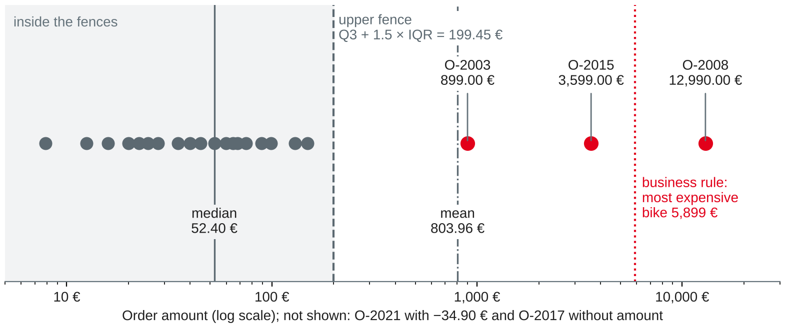

Data Management
pandas basics · missing values, duplicates, outliers, inconsistent formats · standardisation and validation rules
DHBW · Digital Business Management (Business IT) · Semester 2
customer yetYour preparation: pandas installed and tested; your team's five quality rules. Which of your rules could a cleaning step repair, and which can only flag a problem?
Wang and Strong (1996); session 13 of this course.
import sqlite3
import pandas as pd
con = sqlite3.connect("bikeshop.db") # built in session 13 with the four scripts
raw = pd.read_sql("SELECT * FROM webshop_customer", con)
orders = pd.read_csv("webshop-orders-session14.csv") # newraw stays untouched — every cleaning step works on a copyOwn example based on the bike shop case; all data fictional. McKinney (2022, Chapter 6).
Tables in Python
DataFrame
A table: rows with an index (labels) and named columns. Each column has one data type.
Series
One column of a DataFrame: values plus the index. raw["city"] is a Series.
Vectorised
Operations work on whole columns at once — no loops: raw["city"].str.lower()
| pandas type | Typical use | Missing value |
|---|---|---|
str (pandas 2: object) | text, codes, postcodes | NaN |
float64, Int64 | amounts, counts, keys | NaN / <NA> |
datetime64 | dates, timestamps | NaT |
boolean | yes/no flags | <NA> |
Based on McKinney (2022, Chapter 5) and pandas development team (n.d.-a, n.d.-d).
raw.shape # (20, 9)
raw.dtypes # all 9 columns: str — everything is text
raw.isna().sum() # e_mail 2, postcode 1, city 1, newsletter 1, customer_no 9
raw["city"].value_counts(dropna=False)
# Mannheim 8, Heidelberg 6, Ladenburg 2, Schwetzingen 1,
# MANNHEIM 1, Weinheim 1, NaN 1info() and describe() give an overview of all columns at oncevalue_counts(dropna=False) shows the NaN too — without it, missing values stay invisibleOwn example on the web shop export; McKinney (2022, Chapter 5).
raw["e_mail"] # one column → Series
raw[["account_id", "name", "city"]] # several columns → DataFrame
raw[raw["city"] == "Mannheim"] # rows by condition → 8 rows
raw[(raw["city"] == "Heidelberg") & (raw["newsletter"] == "no")] # → 4 rows
raw.loc[raw["newsletter"] == "yes", ["account_id", "e_mail"]] # rows and columns
raw.sort_values("last_changed").head(3) # W15, W13, W17: the oldest changesraw[mask] keeps the rows where it is True& (and), | (or), ~ (not) — brackets around each condition.loc[rows, columns] selects both — and is the safe way to change valuesOwn example on the web shop export; McKinney (2022, Chapter 5); pandas development team (n.d.-c).
| SQL (sessions 8–10) | pandas |
|---|---|
SELECT name, city FROM t | t[["name", "city"]] |
WHERE city = 'Mannheim' | t[t["city"] == "Mannheim"] |
WHERE e_mail IS NULL | t[t["e_mail"].isna()] |
WHERE city IN ('Weinheim', 'Ladenburg') | t[t["city"].isin(["Weinheim", "Ladenburg"])] |
ORDER BY last_changed DESC LIMIT 3 | t.sort_values("last_changed", ascending=False).head(3) |
SELECT city, count(*) … GROUP BY city | t.groupby("city").size() or t["city"].value_counts() |
SELECT DISTINCT city | t["city"].unique() |
LEFT JOIN customer c ON … | t.merge(c, how="left", on="customer_no") |
Based on pandas development team (n.d.-c).
Write the pandas expression and predict the result on raw.
SELECT count(*) FROM webshop_customer WHERE customer_no IS NULLSELECT account_id, name FROM webshop_customer WHERE postcode IS NULL OR city IS NULLSELECT newsletter, count(*) FROM webshop_customer GROUP BY newsletterSELECT account_id FROM webshop_customer WHERE e_mail LIKE '%(at)%'raw["city"] were written in capitals everywhere?Repair what can be repaired — flag the rest
Own illustration based on Rahm and Do (2000) and DAMA International (2017, Chapter 13).
raw.isna().sum() # explicit NaN per column raw.isna().mean().round(3) # as a share: e_mail 0.10, customer_no 0.45 (raw["birth_date"] == "1900-01-01").sum() # 1 hidden missing value (W13)
NaN, NaT, <NA>, None — isna() finds them all1900-01-01, "", "n/a", "-", 0, 99999count, mean and isna() are wrong== NaN: NaN == NaN is False — use isna()Own example on the web shop export; pandas development team (n.d.-a); McKinney (2022, Chapter 7).
| Option | pandas | When it fits | Risk |
|---|---|---|---|
| Drop rows | dropna(subset=["e_mail"]) | the row is useless for this use | lose information; biased results |
| Fill with a value | fillna(...) | a known default: quantity 1, country DE | invents data |
| Fill from another source | fillna(other), merge | a trusted reference: postcode → city | the source may be wrong, too |
| Flag and keep | df["e_mail_missing"] = df["e_mail"].isna() | most cases in master data | someone must follow up |
fillna(0) 1,899.13 € — a missing price is not a free bikeBased on McKinney (2022, Chapter 7) and DAMA International (2017, Chapter 13); own example on the bike shop data.
| Mechanism | Meaning | Web shop example |
|---|---|---|
| MCAR: missing completely at random | missingness has nothing to do with the data | a server error lost some fields |
| MAR: missing at random | depends on other, observed values | customers who registered in the till never gave an e-mail |
| MNAR: missing not at random | depends on the missing value itself | older customers leave the birth date empty more often |
Based on Rubin (1976); own examples.
df = raw.copy()
for col in ["name", "e_mail", "postcode", "city"]:
df[col] = df[col].str.strip() # spaces at the ends
df["name"] = df["name"].str.title() # 'anna berger' → 'Anna Berger'
df["city"] = df["city"].str.title() # 'MANNHEIM' → 'Mannheim': 5 cities
df["e_mail"] = df["e_mail"].str.lower().str.replace("(at)", "@", regex=False)
codes = {"yes": True, "y": True, "1": True, "no": False}
df["newsletter"] = df["newsletter"].str.lower().map(codes).astype("boolean")
# True 10, False 9, <NA> 1map with a dictionary documents the decision; unmapped values become missing, not silently wrongOwn example on the web shop export; McKinney (2022, Chapter 7).
iso = pd.to_datetime(df["birth_date"], format="%Y-%m-%d", errors="coerce")
ger = pd.to_datetime(df["birth_date"], format="%d.%m.%Y", errors="coerce")
bd = iso.fillna(ger) # W08 '12.06.1999' → 1999-06-12; W19 → NaT
df["birth_date"] = bd.where(bd.between("1910-01-01", "2027-05-03")) # W13, W14 → NaT
df["postcode"] = df["postcode"].str.removeprefix("D-") # 'D-69117' → '69117'
ok = df["postcode"].str.fullmatch(r"\d{5}", na=False) # W11 '6811', W13 NaN
df["postcode"] = df["postcode"].where(ok)errors="coerce": what cannot be parsed becomes NaT — look at these rows before moving on1991-02-29 (W19) does not exist: pandas → NaT; SQLite's date() gave 1991-03-0101067 (Dresden) would lose its leading zeroOwn example on the web shop export; pandas development team (n.d.-b); McKinney (2022, Chapter 7).
raw.duplicated(subset=["name", "birth_date"]).sum() # 1: only Jonas Albrecht df.duplicated(subset=["name", "birth_date"]).sum() # 2: + Anna Berger (now title case) df[df.duplicated(subset=["name", "birth_date"], keep=False)] # W01, W02, W03, W17
drop_duplicates()'anna berger' and 'Anna Berger' only match after title()'Müller' / 'Mueller') need fuzzy matching — and a person to confirmOwn example on the web shop export; Rahm and Do (2000); McKinney (2022, Chapter 7).
df = df.sort_values("last_changed")
older = df.duplicated(subset=["name", "birth_date"], keep="last")
df.loc[older, "account_id"].tolist() # ['W17', 'W03']
clean = df[~older] # 18 accounts
moved = {"W03": "W01", "W17": "W02"} # old account → surviving account
orders["account_id"] = orders["account_id"].replace(moved) # O-2004, O-2012Own example on the web shop export and orders; McKinney (2022, Chapter 7).
orders["amount_eur"] = pd.to_numeric(orders["amount_eur"].str.replace(",", "."))
orders = orders.drop_duplicates() # O-2015 was exported twice
x = orders["amount_eur"]
q1, q3 = x.quantile([0.25, 0.75]) # 23.70 and 94.00
fence = q3 + 1.5 * (q3 - q1) # 199.45
orders[x > fence] # O-2003, O-2008, O-2015
orders[~x.between(0.01, 5899)] # O-2008 12,990.00, O-2021 −34.90Own example on the web shop orders; Tukey (1977); McKinney (2022, Chapter 7).

Own illustration based on Tukey (1977); fictional web shop orders (webshop-orders-session14.csv).
Choose drop, fill, repair, flag or ask — and say why.
'69 117'1900-01-01Measure again — then enforce
rules = {
"e-mail present": clean["e_mail"].notna(),
"postcode has 5 digits": clean["postcode"].str.fullmatch(r"\d{5}", na=False),
"birth date plausible": clean["birth_date"].between("1910-01-01", "2027-05-03"),
"newsletter known": clean["newsletter"].notna(),
}
report = pd.DataFrame({
"pass_pct": {r: round(100 * m.mean(), 1) for r, m in rules.items()},
"failing": {r: ", ".join(clean.loc[~m, "account_id"]) for r, m in rules.items()}})| rule | pass_pct | failing |
|---|---|---|
| e-mail present | 88.9 | W11, W16 |
| postcode has 5 digits | 88.9 | W11, W13 |
| birth date plausible | 83.3 | W13, W14, W19 |
| newsletter known | 94.4 | W13 |
Own example on the cleaned web shop export; metrics based on Pipino et al. (2002).
| Rule | Raw export (20 rows) | Cleaned (18 rows) |
|---|---|---|
| one account per person | 90.0 % | 100.0 % |
| e-mail valid format (of present) | 94.4 % | 100.0 % |
| postcode valid (of present) | 89.5 % | 100.0 % |
| birth date valid (of all) | 80.0 % | 83.3 % |
| e-mail present | 90.0 % | 88.9 % ↓ |
| postcode present | 95.0 % | 88.9 % ↓ |
Own example on the web shop export; metrics based on Pipino et al. (2002).
con.execute("""CREATE TABLE webshop_account (
account_id TEXT PRIMARY KEY,
e_mail TEXT CHECK (e_mail LIKE '%_@_%._%'),
postcode TEXT CHECK (length(postcode) = 5),
newsletter INTEGER CHECK (newsletter IN (0, 1)),
customer_no INTEGER REFERENCES customer (customer_no),
...)""")
out = clean.assign(birth_date=clean["birth_date"].dt.strftime("%Y-%m-%d"), ...)
out.to_sql("webshop_account", con, if_exists="append", index=False)
# DatabaseError … caused by IntegrityError: FOREIGN KEY constraint failed — 0 rows storedappend: to_sql alone creates a table without anyOwn example on the web shop export; McKinney (2022, Chapter 6); SQLite (n.d.).
| Pitfall | What happens | Instead |
|---|---|---|
df[df["a"] > 1]["b"] = 0 | changes a copy, not df (pandas 3) | df.loc[df["a"] > 1, "b"] = 0 |
df["x"] == np.nan | always False | df["x"].isna() |
| integer key with a missing value | becomes float: 101.0 | .astype("Int64") |
and, or with Series | ValueError: … ambiguous | &, `\ |
str.contains("(at)") | (at) is a regular expression | regex=False |
pd.to_numeric(..., errors="coerce") | bad values vanish silently | count the new NaN first |
Based on pandas development team (n.d.-a, n.d.-d) and McKinney (2022, Chapters 5 and 7).
New notebook, raw and orders loaded. Predict first, then run. Keep raw unchanged.
city and newsletterOwn example on the web shop export and orders; McKinney (2022, Chapters 5–7).
Use the five quality rules from session 13.
Your cleaning plan and notebook are part of milestone 4 (data loading and quality, after session 16).
Preparation: finish the hands-on questions and worksheet 14; check that import requests works in Jupyter (pip install requests if not); find one open data source your team could use.